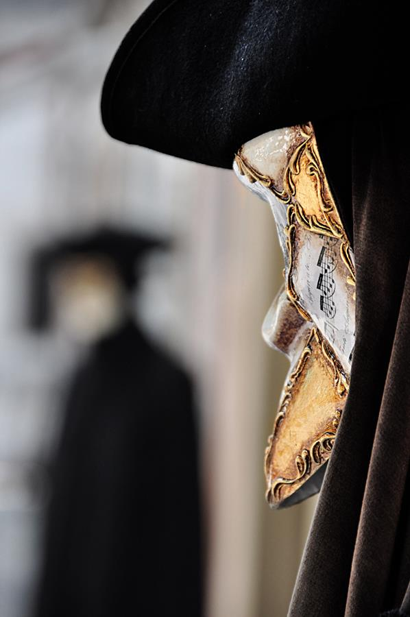

Tragicznej skargi maska i żałoba
Maj roku 1906. Rodin, gwałtowny, porywczy Rodin w przystępie złego humoru oskarża Rilkego o złe wykonywanie obowiązków sekretarza i wiedziony gniewem wypowiada mu pracę oraz dom. Urażony do głębi poeta pisze kilka dni później list — list pełen godności, żalu, lecz zarazem niewygasłej czci dla mistrza.
Oto wypędzono mnie jak sługę przyłapanego na złodziejstwie, bez uprzedzenia, z małego domku, gdzie kiedyś przyjaźń Pańska mnie życzliwie umieściła… Czuję się tym do głębi zraniony.
W słowach Rilkego nie pobrzmiewa jednak gorycz, lecz… zrozumienie. Świadomość nieuchronnej konieczności rozstania.
Lecz ja Pana rozumiem. Jakże często go rozumiałem podczas naszych wspólnych niezapomnianych kontemplacji. Jestem przekonany, że nie ma drugiego człowieka w moim wieku, który potrafiłby tak Pana rozumieć, pojmować wielkość Pańskiego życia i podziwiać je z tak pełną świadomością. A oto teraz, wielki Mistrzu, staje się Pan dla mnie niewidzialny, jakby jakimś wzlotem uniesiony w Pańskie nieba.
Doznana przykrość przeobraża się w wyobraźni poety w przeznaczone mu zrządzenie losu, które wytycza dlań nową ścieżkę życia, pełną tajemnic, lecz i wyczekiwanych, nieznanych jeszcze odkryć.
Ja już Pana więcej nie zobaczę — lecz podobnie jak dla apostołów, co pozostali w smutku i osamotnieniu, zaczyna się teraz dla mnie życie, które będzie sławić Pański niedosiężny przykład i w Panu znajdzie pokrzepienie, swe prawo i siłę. Obaj jesteśmy zgodni co do tego, że istnieje w życiu jakaś sprawiedliwość, która spełnia się powoli, lecz bezbłędnie. W niej pokładam całą swą nadzieję. Ona naprawi pewnego dnia błąd, jakiego Pan się dopuścił wobec człowieka, który nie ma możności ni prawa odkryć przed Nim wnętrza swego serca.
Rilke nie żywi urazy, obca jest mu nieufność czy zwyczajna podejrzliwość. Zadziwiające, lecz poeta nie będzie skrywać w sobie żalu do nikogo. Nawet w obliczu spraw ostatecznych. Nawet wobec śmierci.
Nie mamy żadnego powodu po temu, by żywić nieufność wobec naszego świata, bo nie zwraca się on przeciwko nam
— napisze w słynnych „Listach do młodego poety”.
Jeśli są w nim strachy, to są to nasze strachy, jeśli są w nim otchłanie, to otchłanie te należą do nas, jeśli są tu niebezpieczeństwa, to musimy próbować je pokochać… Może wszystko, co straszne, jest w głębi bezbronne i oczekuje od nas pomocy.
W wierszu „Doświadczenie śmierci” zabrzmią słowa tchnące ostatecznym zrozumieniem:
O tych odejściach, których nasz los nie obchodzi,
nie wiemy nic. Nie ma powodu, byśmy
okazywali miłość, nienawiść lub podziw
śmierci, którą odkształca w sposób tak wymyślny
tragicznej skargi maska i żałoba.
Fragmenty listu Rilkego do Rodina w przekładzie W. Markowskiej, fragment „Listów do młodego poety” w przekładzie J. Nowotniak, fragment wiersza „Doświadczenie śmierci” w przekładzie M. Jastruna.